We built a machine learning system that reads food price signals 3 months in advance — giving humanitarian organizations time to act before millions go hungry.
A 20% rise in food prices within 3 months is a serious market shock. Our model is built to detect this before it affects people's daily lives.
When food prices rise sharply, families can no longer buy enough food. But aid organizations usually respond after the crisis has already started. We asked: can we see it coming?
We define a crisis event as a price increase of 20% or more within the next 3 months. This matches the WFP Alert Price Spikes (ALPS) method, which calls such rapid rises "Market Shocks." By combining 9 years of monthly price data with country-level food insecurity scores, we train machine learning models to warn us before the damage is done.
Which countries and food products experience the highest price volatility, and are these patterns seasonal?
We use features like volatility ratios and month to separate normal seasonal price changes from unusual market shocks.
Using past price movements and a country's current food insecurity score, can a food price crisis in a country be predicted 3 months in advance?
We combine price data with FAO vulnerability scores to train models that can warn us about a crisis before it happens.
What are the most effective factors in determining crisis risk: country vulnerability, or seasonality?
We look at feature importance and SHAP values to understand what drives the model's predictions — so policymakers can trust and use it.
We use two datasets together. One tracks food prices at the market level, and the other measures food insecurity at the country level. Neither dataset alone is enough — combining them gives us a much stronger signal.
2016–2024 · Monthly · ~2M records
Monthly food price data from the World Food Programme, covering many markets, countries, and food products.
Download dataset ↗Annual · Country-level · 60 countries
Annual country-level data showing the percentage of people who face moderate or severe food insecurity, from the FAO via World Bank.
Download dataset ↗scripts/01_load_data.py.avg_price, median_price, price_std, and obs_count for each group.crisis_label = 1 if the average price goes up by 20% or more in the next 3 months; otherwise 0. The future price column is deleted after labelling to avoid data leakage.countryiso3 and year. Countries with less than 4 FAO years are removed. Final dataset: 67,564 rows · 60 countries.Before building a prediction model, we need to understand how food prices behave in different regions. Some price changes are normal and seasonal. Others are signs of a deeper problem in the supply chain.
The FAO food insecurity score shows which countries are already struggling. In these countries, even a small price rise can have a big impact on families.
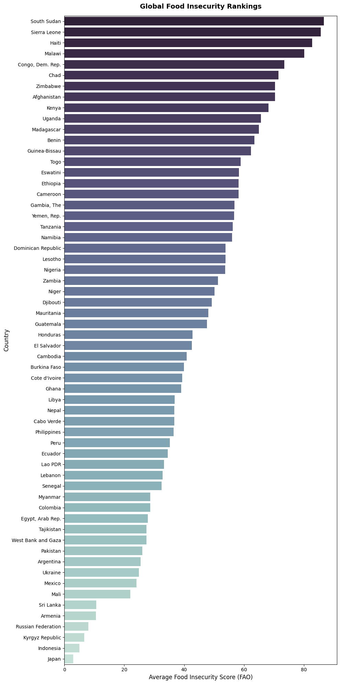
Fig. 1 Countries ranked by food vulnerability. Average FAO food insecurity score per country (2016–2024). Countries at the top have the least protection against price shocks. Afghanistan, Ethiopia, and Sierra Leone are consistently the most at-risk — these are the places where a 3-month early warning can make the biggest difference.
Each bubble represents a food product. The size shows how many crisis events it caused. The axes show price volatility and country vulnerability. Products in the top-right corner are the most dangerous.
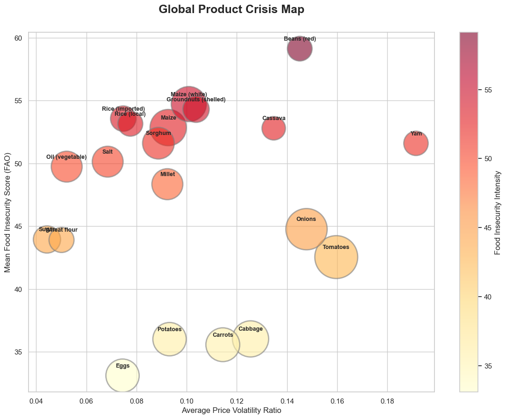
Fig. 2 Staple grains are in the highest-risk zone. Each bubble is one food product. The size shows total crisis events. Staple grains like maize, wheat, and rice appear in the upper-right corner — they have high price volatility and are sold in the most food-insecure countries. These are the products that any early warning system should monitor first.
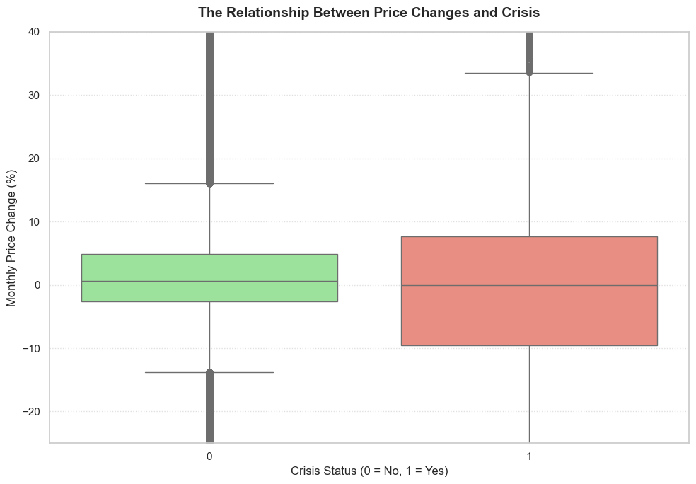
Fig. 3 Prices move faster before a crisis starts. Monthly price changes during crisis (orange) vs. non-crisis (blue) periods. During a crisis, price changes are larger and more extreme. This means prices are already moving fast before a crisis is officially declared. Our lag features are designed to catch this early signal.
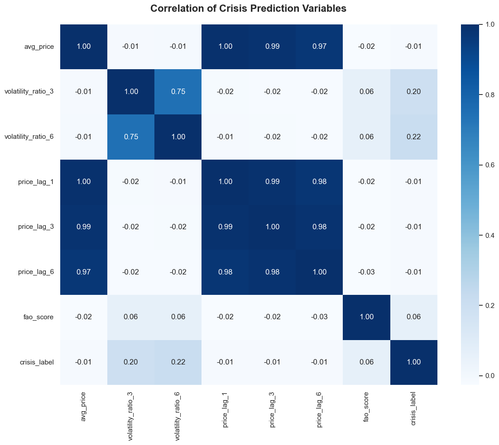
Fig. 4 The signal is there before any model is trained. This heatmap shows how strongly each feature is linked to the crisis label. Price lag and volatility features have the highest correlation. This tells us that our features contain real information about future crises — even without a model.
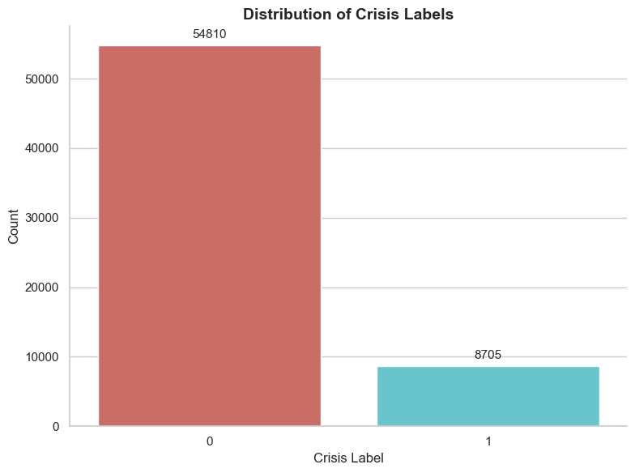
Fig. 5 Accuracy is not a good metric here. Only about 15–20% of records are crisis events. A model that always says "no crisis" would still be 80% accurate — but it would miss every real crisis. This is why we use AUC-ROC, PR-AUC, and F1 instead — these metrics specifically measure how well the model finds the rare but important crisis events.
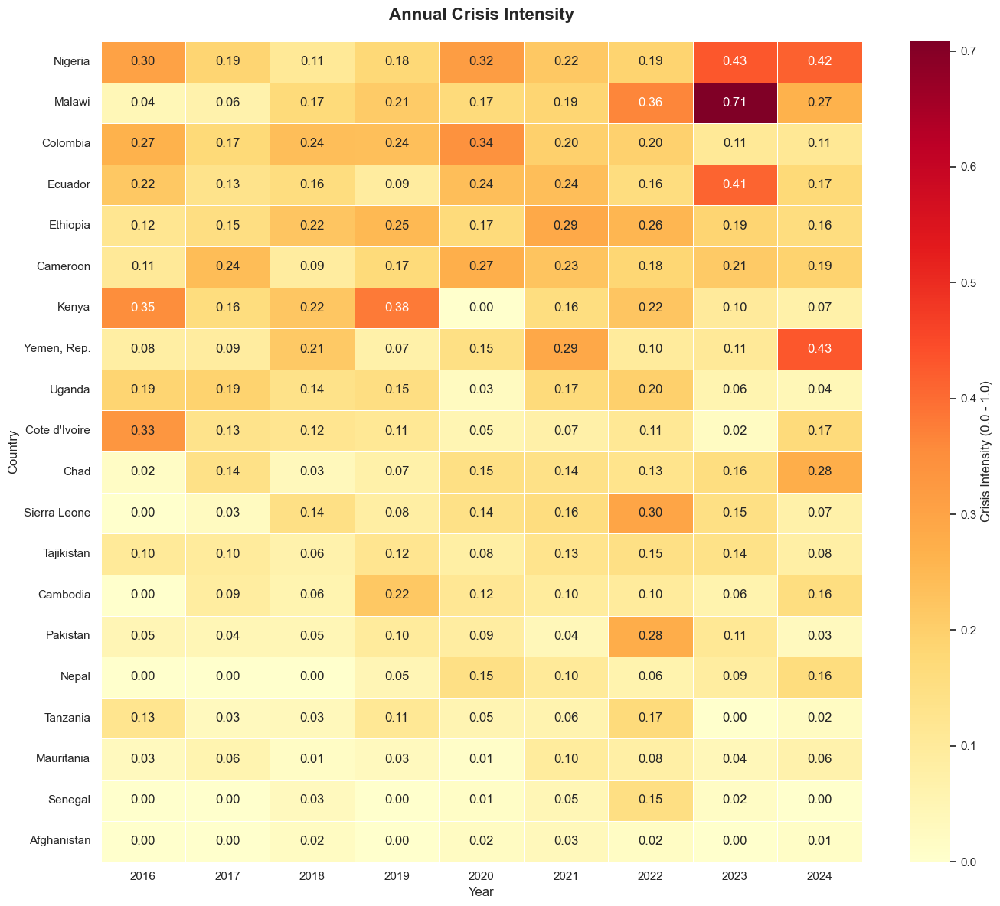
Fig. 6 Big global events show up clearly in price data. This heatmap shows what share of a country's food products were in crisis each year, for the 20 highest-risk countries. The 2020 row (COVID-19) and 2022–2023 rows (Russia-Ukraine war, global grain price rise) are clearly visible across many countries at the same time. These real-world events leave clear patterns that machine learning can learn from.
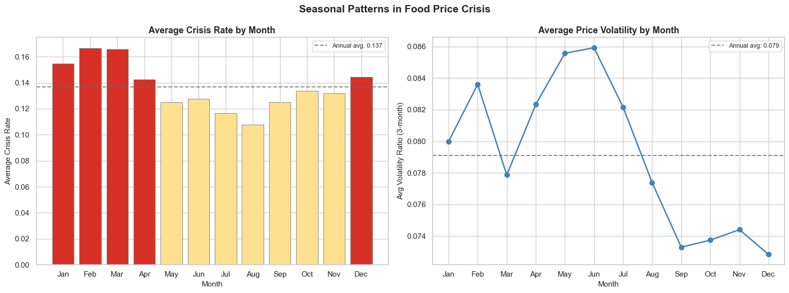
Fig. 7 Seasonality matters, but it is not enough on its own. Left: monthly crisis rate compared to the yearly average (red = above average). Right: price volatility by month. Harvest seasons and lean periods create regular patterns of risk. The effect is real but small — knowing the month alone is not enough to predict a crisis. We include month as a feature to capture this extra signal.
Price momentum is a stronger signal than the month of the year — but ignoring seasonality means missing useful information.
Past price movements show how a product's market is behaving. The FAO food insecurity score shows how vulnerable a country already is. By combining these two types of information, we train models that can give humanitarian organizations an early warning — before a crisis fully develops.
Target: crisis_label — 1 if price rises ≥ 20% in the next 3 months.
If we shuffle time-series data randomly, future information can leak into training. This makes the model look better than it really is. To avoid this, we use a strict time-based split — the model only trains on past data and is never shown future information during training:
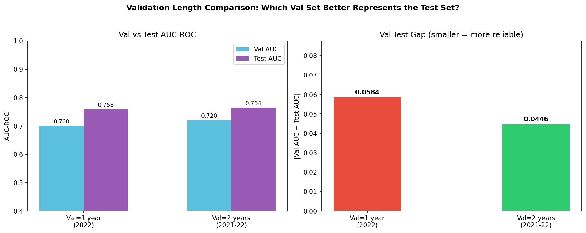
Fig. 8 A 2-year window makes model selection more reliable. This chart shows how close validation performance is to actual test performance. A smaller gap means the model behaves consistently on new data. The 2-year validation window is more stable than a 1-year window — so the choices we make on validation data are more likely to hold on the test set.
We test five models, each chosen for a specific reason:
Logistic Regression: A simple linear model used as our baseline. It shows whether the problem can be solved with just linear relationships. If more complex models cannot beat it, the extra complexity is not worth it.
Random Forest: An ensemble of decision trees that captures non-linear patterns between price lags and FAO scores. It is robust to overfitting and provides feature importance scores as an early indicator of which variables drive crisis predictions.
XGBoost (default): A gradient boosting model known for strong performance on imbalanced tabular data. Each round focuses on the samples the model got wrong, making it well-suited for detecting rare crisis events. Run at default settings to separate the algorithm's contribution from tuning.
LightGBM: Another gradient boosting model that grows trees differently from XGBoost. Included to check whether a different boosting strategy changes the results, and to make sure XGBoost's lead is not due to how it builds trees.
XGBoost (tuned): Our final model. We searched 40 different combinations of key hyperparameters using TimeSeriesSplit so that future data never leaks into training. The best model was picked by AUC-ROC and tested once on the 2023–2024 test set. The winning parameter values are: max_depth = 3, learning_rate = 0.01, n_estimators = 200, subsample = 0.7, colsample_bytree = 0.7, min_child_weight = 1, gamma = 0.3.
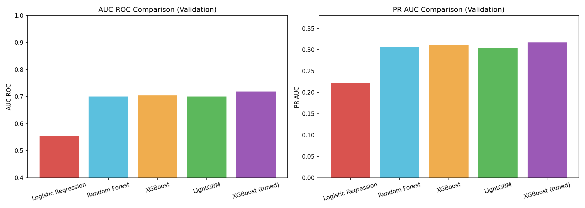
Fig. 9 Tuning the model leads to better results. AUC-ROC and PR-AUC scores for all five models on the 2021–2022 validation set. XGBoost (tuned) scores the highest on both metrics. The difference between the tuned and default XGBoost shows that searching for the best hyperparameters clearly pays off [Chen & Guestrin, 2016].
About 80% of records are non-crisis. A model that always predicts "no crisis" would score 80% accuracy — but it would never detect a real crisis. So we use AUC-ROC, PR-AUC, and F1 instead. These metrics focus on how well the model finds the rare crisis events, which is what actually matters.
The lower F1 and PR-AUC are expected. With only 20% of records being crises a random classifier on this data would score around 0.20 PR-AUC — we reach 0.32, a 60% improvement over doing nothing. F1 is pulled down by the same imbalance: getting precision and recall high simultaneously is genuinely hard when one class is four times rarer.
Model Comparison
| Model | AUC-ROC | PR-AUC | Precision | Recall | F1 |
|---|---|---|---|---|---|
| Logistic Regression | 0.5537 | 0.2226 | 0.1815 | 0.4784 | 0.2632 |
| Random Forest | 0.7007 | 0.3066 | 0.5289 | 0.0510 | 0.0931 |
| XGBoost | 0.7051 | 0.3119 | 0.2992 | 0.4796 | 0.3685 |
| LightGBM | 0.7004 | 0.3046 | 0.2956 | 0.4529 | 0.3577 |
| XGBoost (tuned) ★ | 0.7194 | 0.3169 | 0.2598 | 0.6803 | 0.3760 |
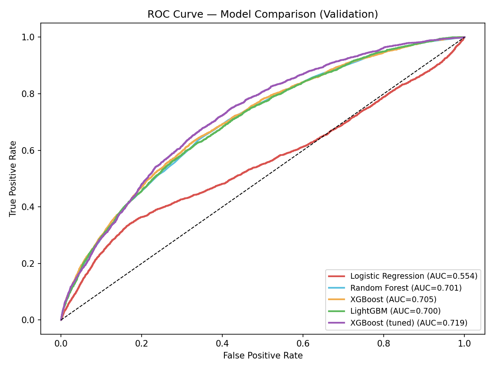
Fig. 10 XGBoost (tuned) leads at every threshold level. ROC curves for all five models on the validation set. XGBoost (tuned) has the largest area under the curve at every point. This is important because the alarm threshold is a decision that depends on the context — a good model should outperform others whether the threshold is set strictly or loosely.
Our model gives each observation a probability between 0 and 1 — for example, "this country has a 72% chance of a food crisis in the next 3 months." To turn this into a real decision ("crisis" or "no crisis"), we need a cutoff point called the threshold. Any probability at or above the threshold is labelled as a crisis; anything below is labelled as no crisis.
The default threshold is 0.50, but this is not always the best choice. Lowering the threshold means the model warns more often — it catches more real crises, but also raises more false alarms. Raising the threshold means fewer false alarms, but more real crises go undetected. In a humanitarian setting, missing a real crisis is far more costly than a false alarm, so finding the right balance matters.
To find this balance, we scanned many different threshold values on our validation set (2021–2022). For each value, we calculated Precision (how often the alarm is actually correct), Recall (how many real crises are caught), and F1 (the harmonic mean of both — it is high only when both precision and recall are decent). The threshold with the highest F1 score was selected as optimal. We then applied it once to the test set and never changed it after that point.
Threshold Scan — Validation Set (2021–2022)
| Threshold | Precision | Recall | F1 Score | Note |
|---|---|---|---|---|
| 0.20 | 0.14 | 0.96 | 0.244 | Very high recall — too many false alarms |
| 0.30 | 0.18 | 0.89 | 0.300 | — |
| 0.40 | 0.23 | 0.80 | 0.354 | — |
| 0.50 | 0.26 | 0.68 | 0.376 | — |
| 0.5618 ★ | 0.2975 | 0.5400 | 0.3836 | Highest F1 — selected as optimal |
| 0.65 | 0.36 | 0.40 | 0.379 | — |
| 0.70 | 0.51 | 0.19 | 0.277 | — |
| 0.80 | 0.64 | 0.09 | 0.158 | Very high precision — misses too many real crises |
The 0.50 row matches the default-threshold validation metrics. The 0.5618 row is the actual optimal found by the precision-recall curve scan. The selected threshold was applied once to the test set and never changed afterwards.
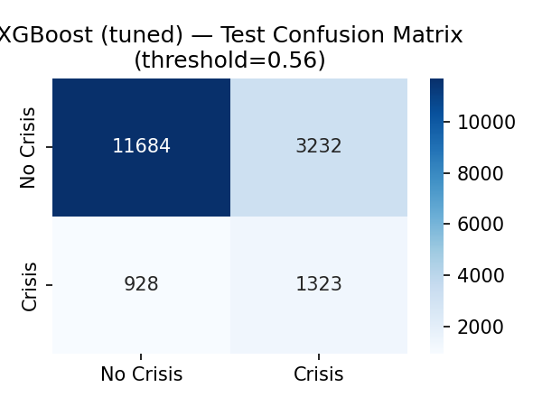
Fig. 11 How many crises did the model catch? Confusion matrix on the 2023–2024 test set. True Positives = crises correctly detected 3 months in advance. False Negatives = missed crises — the most costly type of error in a humanitarian setting. We chose the threshold to minimize missed crises while keeping false alarms at a manageable level. The test set contained a total of 2,251 real crisis events. The model correctly predicted 59% of them — meaning it detected more than half of all real crises 3 months in advance.
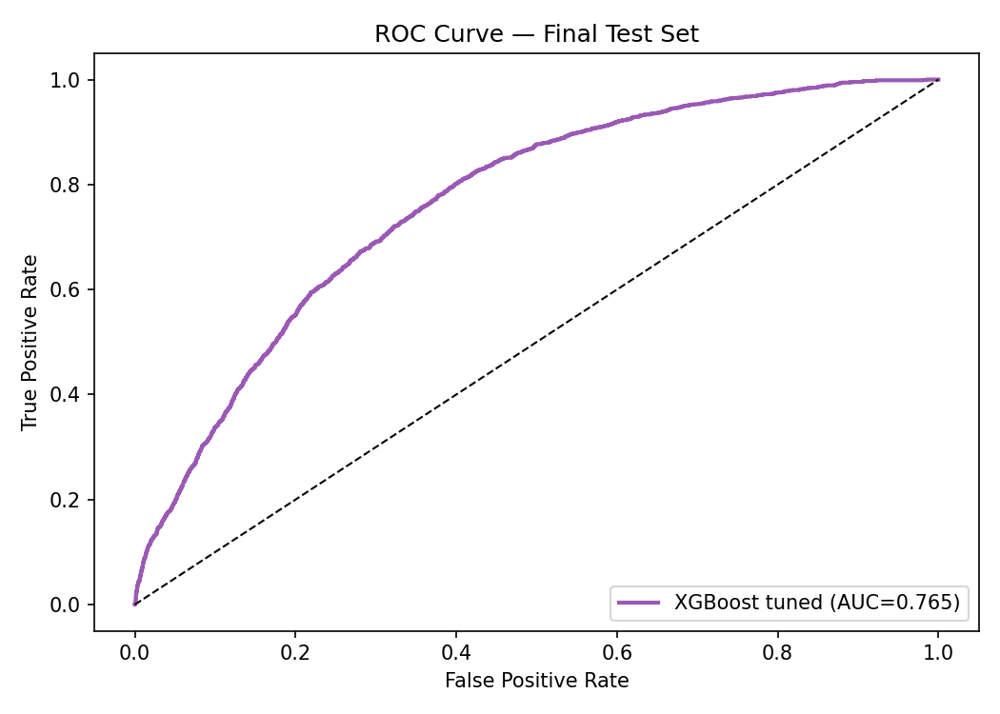
Fig. 12 Final performance on completely unseen data. ROC curve of XGBoost (tuned), tested once on the 2023–2024 held-out set. The model had never seen this data during training or threshold selection. An AUC clearly above 0.5 confirms that the model can detect future crises — not just the ones it learned from.
Using machine learning to predict food crises is a growing research area. The most similar study to ours is Andrée et al. (2020), who used WFP food prices and food insecurity scores with gradient boosted trees to predict crises 3 months ahead — they reported an AUC-ROC of 0.71–0.82. Our model (AUC 0.765) produces results in the same range, but across a broader set of 60 countries. Brych et al. (2025) built a similar early warning system using CatBoost, LSTM, and SHAP for Ukraine, Moldova, and Serbia — validating our choice of explainable ML and temporal validation. Other related studies include Busker et al. (2024), who used satellite and climate data; Martini et al. (2022), who used news data; Kino et al. (2022), who worked with FAO insecurity scores; and Driver et al. (2024), who combined live price data with climate signals. Our project is unique in building a price-first system that works across 60 countries.
Yes — food price crises can be predicted 3 months in advance. XGBoost (tuned) gives the best balance between precision and recall on both the validation and test sets.
A model that works well is only useful if we understand why it makes its decisions. By looking at feature importance and SHAP values, we find out what really drives food crises — so organizations can focus their resources on the right signals.
A prediction model is only useful if we understand why it gives a certain result. We look at feature importance from all five models and use SHAP values [Lundberg & Lee, 2017] to see how each feature pushes the model toward or away from predicting a crisis — for every single observation.
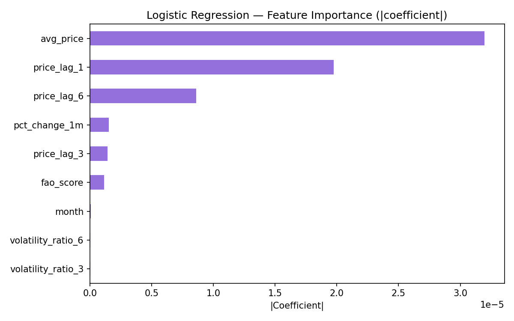
Fig. 13 Logistic Regression — feature importance based on coefficient size. Even in this simple linear model, price lag features are the most important. The crisis signal is strong enough to be picked up without complex patterns.
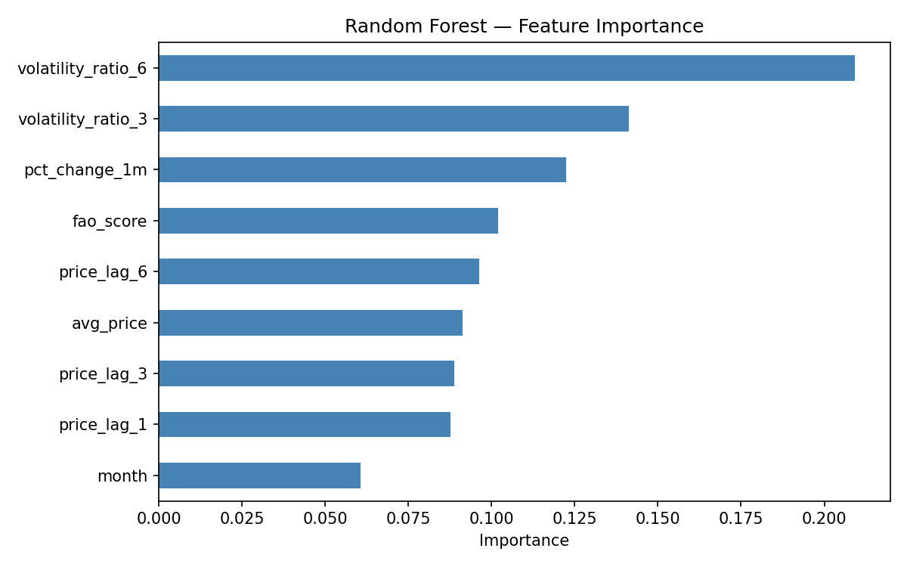
Fig. 14 Random Forest — feature importance based on mean impurity decrease. This model captures non-linear patterns and handles outliers well. Price lag 1 is still the top feature, and volatility ratios are also important — consistent with the simpler model.
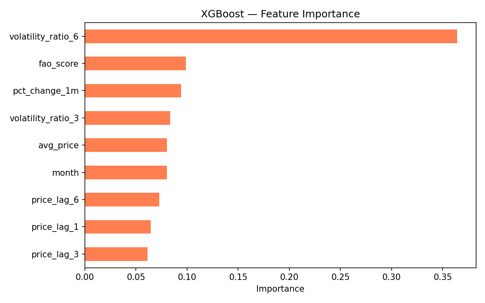
Fig. 15 XGBoost (default) — works well on structured tabular data [Chen & Guestrin, 2016]. This is the baseline before any hyperparameter tuning.
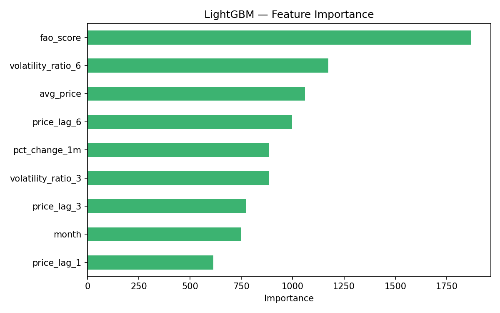
Fig. 16 LightGBM — a different type of gradient boosting. The feature ranking is similar to the other tree models, which confirms that the same signals are important across different algorithms.
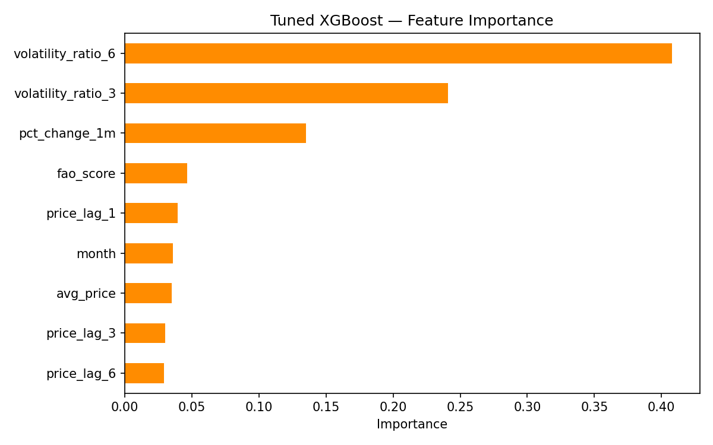
Fig. 17 XGBoost (tuned) — our final model. The feature rankings change slightly compared to the default version, but the main story stays the same.
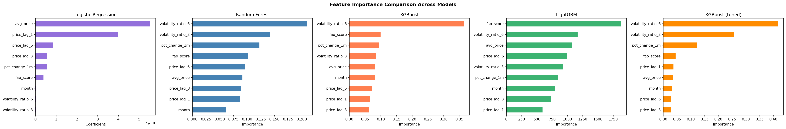
Fig. 18
The same features are important in every model.
Feature importance for all five models shown side by side. price_lag_1 consistently ranks first or second in every model. The FAO food insecurity score also appears in the top features across all models. When a feature is important regardless of the algorithm, it is a truly reliable crisis indicator.
Feature importance scores only tell us which features matter. SHAP goes further — it shows how each feature pushes each individual prediction toward or away from a crisis, and by how much.
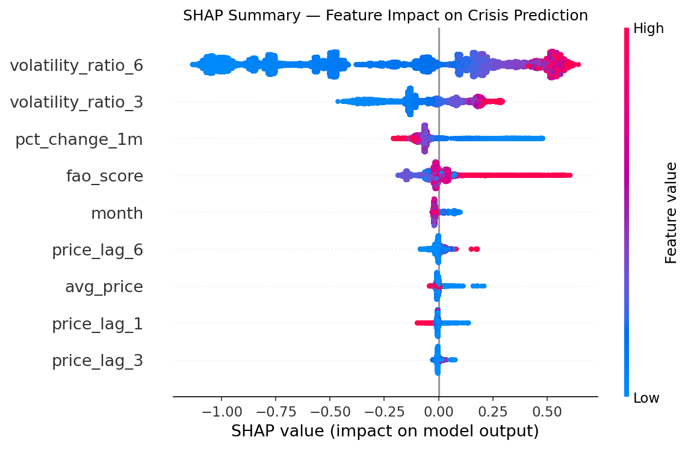
Fig. 19 How the model makes its decisions — one observation at a time. SHAP beeswarm plot for XGBoost (tuned) on the test set [Lundberg & Lee, 2017]. Each dot is one observation. Color shows the feature value (red = high, blue = low). The x-axis shows how much that feature pushed the prediction toward or away from a crisis. High recent prices (red dots on the right) strongly increase crisis probability. The model's logic matches what we would expect from domain knowledge — it is not a black box.
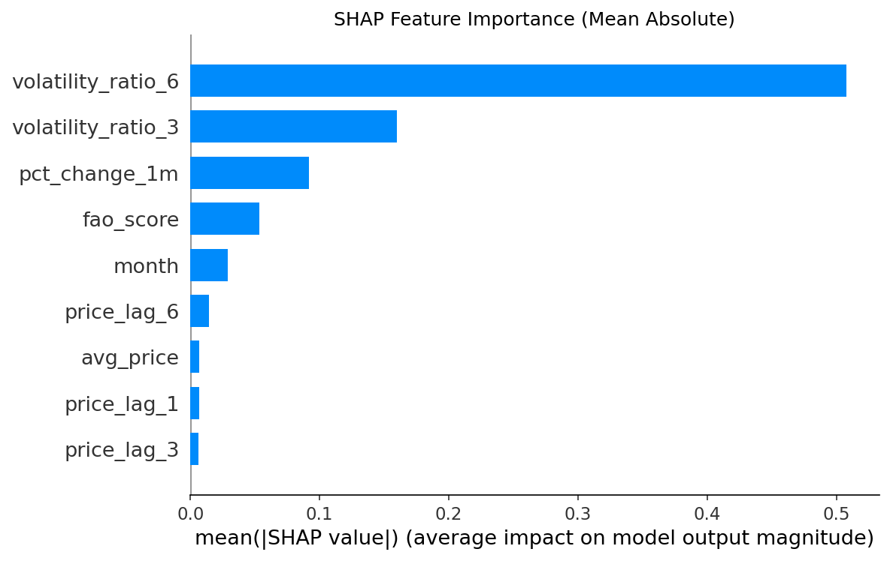
Fig. 20 Average contribution of each feature across all predictions. Mean absolute SHAP values show which features have the biggest impact on average. Unlike simpler importance measures, SHAP is based on game theory and treats positive and negative effects separately [Lundberg & Lee, 2017]. Price momentum has the largest impact. FAO score and month also contribute, but at a lower level.
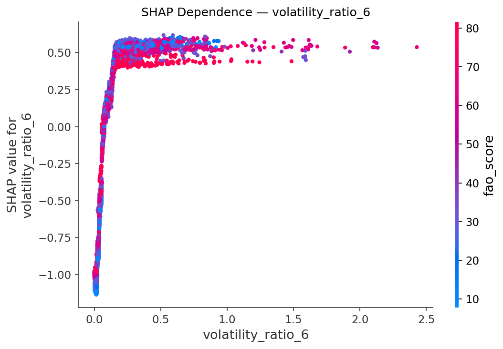
Fig. 21
Country vulnerability makes price shocks more dangerous.
SHAP dependence plot for price_lag_1, colored by FAO food insecurity score. As recent prices go up, crisis probability increases. But countries with high FAO scores (red dots) sit above the others — the same price increase causes a bigger crisis risk in a country that is already food-insecure. Vulnerability does not just exist in the background — it makes every price shock more dangerous.
Price momentum is the strongest factor. Country vulnerability (FAO score) makes it worse. Seasonality also plays a role — but it is less important than what is already happening in the market.
Food price crises leave clear signs in price data weeks before families feel the impact. By combining WFP price data with FAO vulnerability scores and using time-aware machine learning, we can raise an alarm 3 months in advance with meaningful accuracy.
XGBoost (tuned) gave the best results on both the validation and test sets. SHAP analysis showed that the model's decisions match what we know about food crises — recent price changes and volatility are the main drivers, and country vulnerability makes them more dangerous. This makes the model suitable for real humanitarian monitoring.
Every figure on this site is created by a script in scripts/. Nothing is edited manually — all outputs are fully reproducible.
git clone https://github.com/BILGI-IE-423/ie423-2025-2026-termproject-overfitters cd ie423-2025-2026-termproject-overfitters pip install -r requirements.txt python scripts/01_load_data.py python scripts/02_preprocess_data.py python scripts/03_basic_eda.py python scripts/04_baseline_model.py python scripts/05_shap_analysis.py
| Script | Produces | Output Path |
|---|---|---|
03_basic_eda.py | Figures 1–7 · descriptive stats table | visuals/figures/01–07_* |
04_baseline_model.py | Figures 8–18 · model comparison tables | visuals/figures/08–18_* |
05_shap_analysis.py | Figures 19–21 · SHAP plots | visuals/figures/19–21_* |
Citations appear in author-year format throughout this report. All figures are fully reproducible from the scripts and linked datasets.